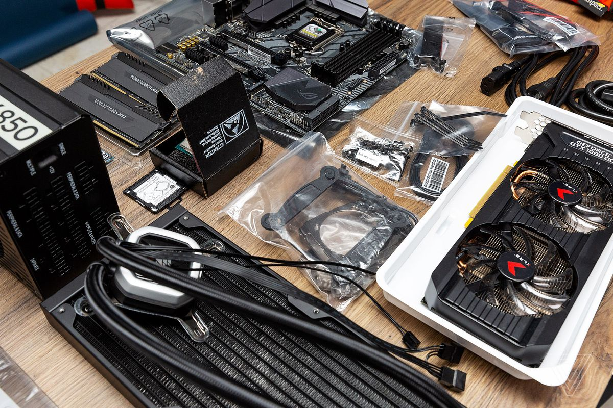

Сборка компьютеров

Несколько лет назад я захотел купить новые комплектующие для компьютера. И чтобы это сделать, мне потребовалось изучить массу информации о каждом компоненте системы. Процесс изучения был очень интересен, я жаждал узнать все тонкости и нюансы при сборке ПК. Во время сборки я делал кучу ошибок, но именно благодаря этим ошибкам научился многому.